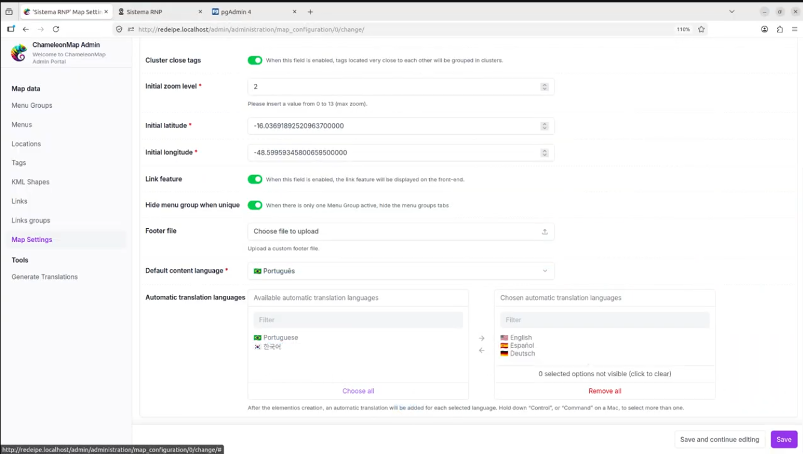
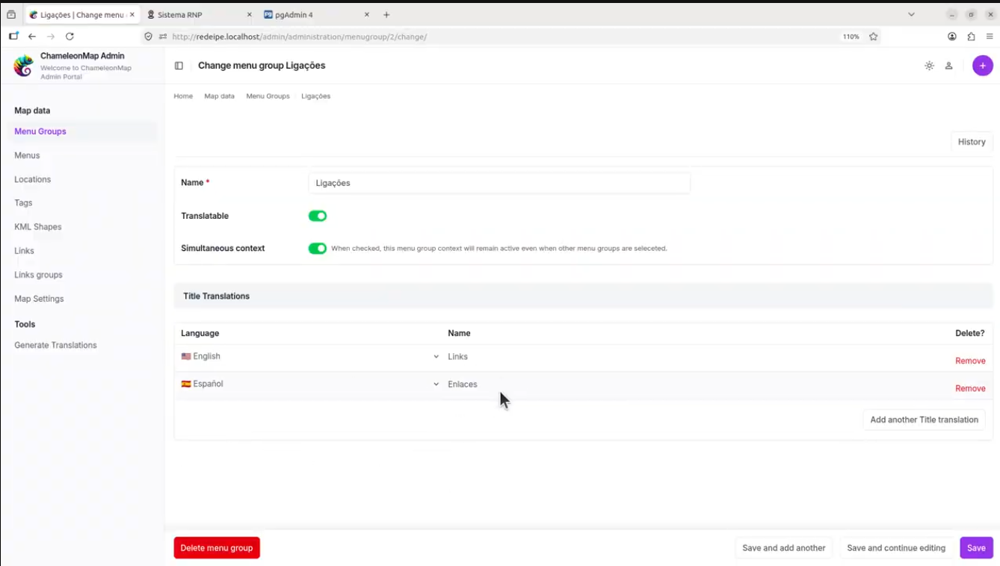
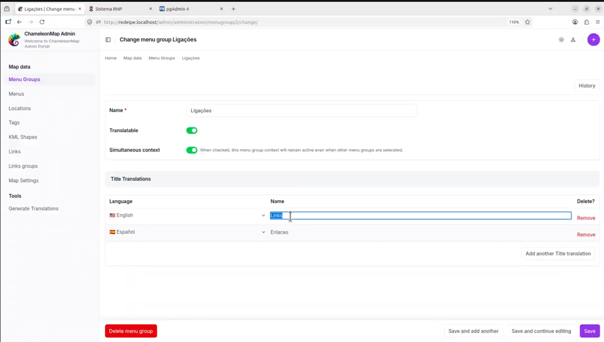
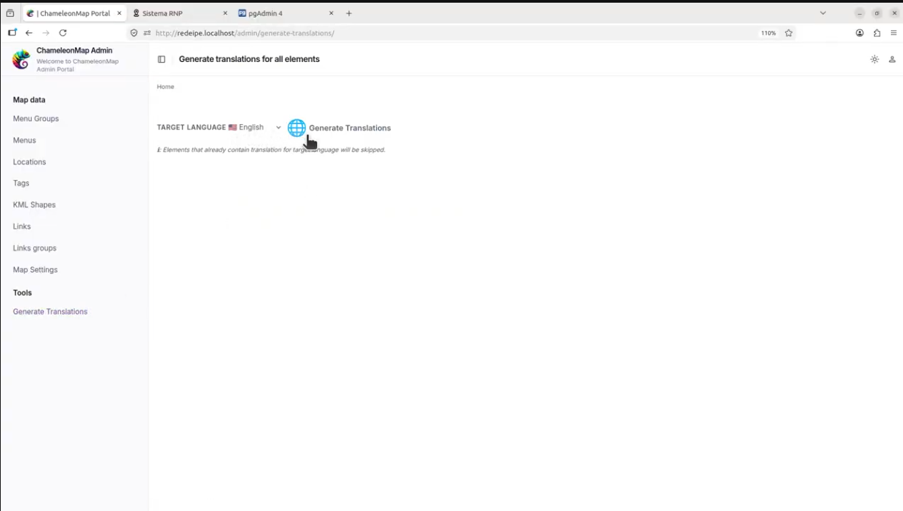
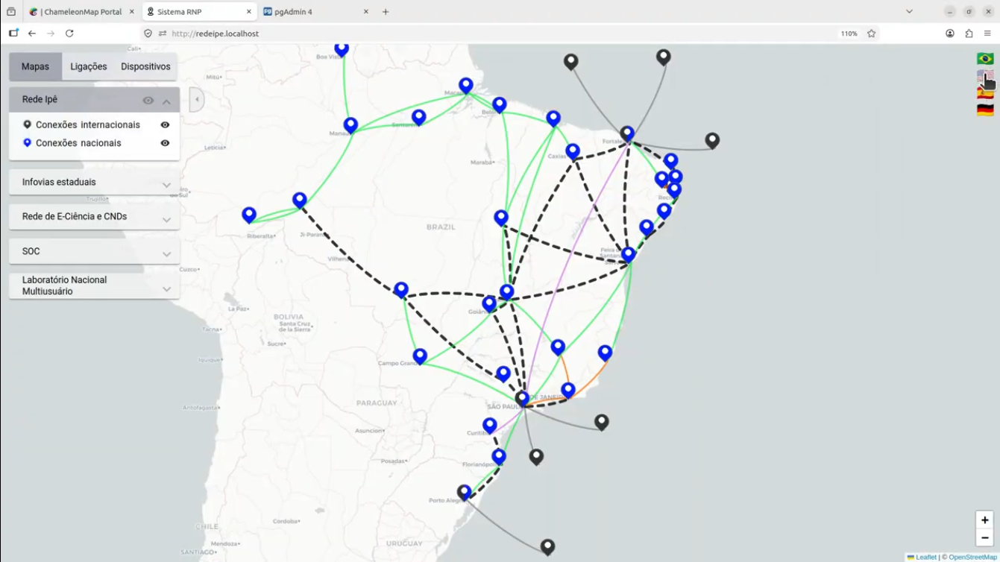

ChameleonMap handles translations in different layers. Some texts belong to the system interface itself, while other texts are data created by administrators and users inside the map. These layers are configured and managed separately.
| Translation Type | Examples | Status |
|---|---|---|
| System interface translations | Buttons, fixed menus, validation messages, administrative labels, and native ChameleonMap text. | Available in System Interface Language |
| User data translations | Menu groups, menus, links, map elements, labels, and content entered through the administrative interface. | Available now |
Scope: This section documents translations for user-entered data. To change fixed system labels, menus, and page titles, see System Interface Language.
User data translations allow content created in the administrative interface to be displayed in multiple languages in the public ChameleonMap portal. For example, an administrator can create a menu group named Dispositivos in Portuguese and provide translated versions such as Devices in English or Dispositivos in Spanish.
Translations can be generated automatically, reviewed manually by an administrator, and displayed to end users when they change the portal language.
The data translation feature is based on three main concepts:
| Concept | Description |
|---|---|
| Default content language | The language used when the original data is created. |
| Automatic translation languages | The target languages for which ChameleonMap should generate translation suggestions. |
| Translatable element | An item that can display a translated value when the user changes the portal language. |
When a new translatable element is created, ChameleonMap uses the default content language as the source and generates suggestions for the configured automatic translation languages. Administrators can then review and adjust each translation.
Before creating translated content, configure the languages used by the map.
In the administrative interface, go to:
Map SettingsThen configure the following fields:
| Field | Purpose |
|---|---|
| Default content language | Defines the original language used when data is created. |
| Automatic translation languages | Defines the languages that should receive automatic translations. |
Example configuration:

Note: New translatable elements receive automatic suggestions only for the languages selected in Automatic translation languages.
Each data item can control whether it participates in the multilingual experience. When creating or editing a menu group, menu, link, or other supported item, check the Translatable option.
| State | Behavior |
|---|---|
| Translatable enabled | The item uses the translated value for the language selected in the public portal. |
| Translatable disabled | The item always displays the original value in every portal language. |

Automatic translations should be treated as suggestions. Review them carefully when the content includes names, acronyms, technical terminology, institutional wording, or terms that should remain unchanged.
To review a translation:
For example, a generated English value such as Devices can be adjusted to My Devices if that is the preferred terminology for the portal.

Automatic generation during form save mainly applies to new or updated records. If the database already contains content created before translation settings were configured, use the batch generation tool.
In the administrative interface, go to:
Tools > Generate Translations
Important: Existing translations are preserved. Batch generation should create only missing values and should not overwrite translations that were already reviewed or edited manually.
After configuring and reviewing translations, validate the result in the public portal from the perspective of an end user.

| Feature | Where to Find It | Purpose |
|---|---|---|
| Default content language | Map Settings | Defines the source language used for original user-entered data. |
| Automatic translation languages | Map Settings | Defines which languages receive automatic suggestions when data is created or updated. |
| Translatable | Content forms | Controls whether a specific item changes according to the selected portal language. |
| Manual translation fields | Content forms, such as Title Translations | Allows administrators to review and adjust generated translations. |
| Generate Translations | Tools | Generates missing translations for existing data in a selected target language. |
| Language selector | Public portal | Allows end users to switch the displayed language for translated data. |